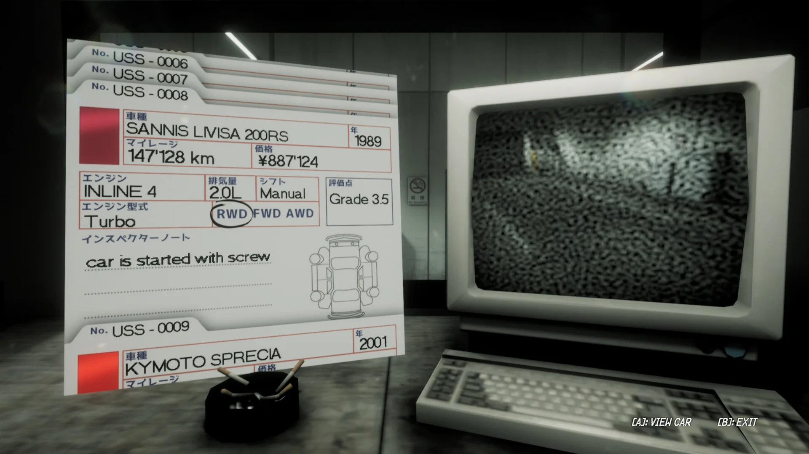
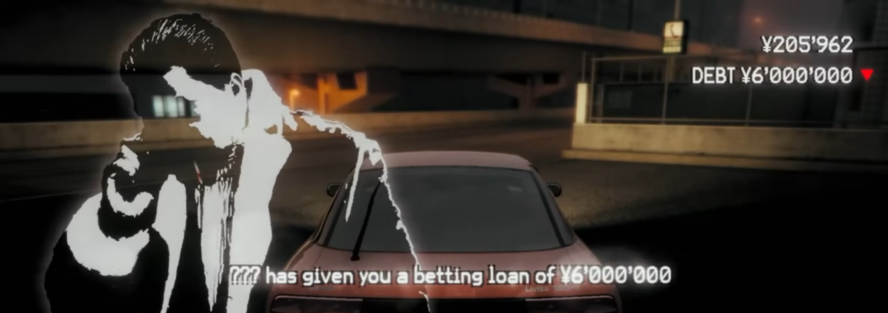
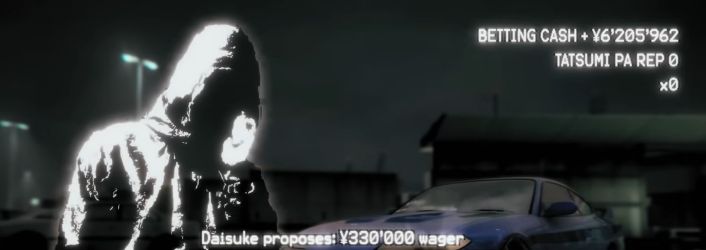

КАК УСТРОЕНА ИГРА
Краткий лор

Начало карьеры
В начале игры главный герой оказывается в своём гараже без автомобиля и без денег. Ему звонит друг по имени J.B. и рассказывает о спрятанной коробке с деньгами под кроватью. Найденные деньги становятся стартовый капиталом игрока и позволяют приобрести свой первый автомобиль.
Аукцион и покупка авто
Получив первые деньги, игрок отправляется на аукцион подержанных автомобилей. Здесь можно выбрать одну из доступных версий Sannis Livisa 180RS или 200RS, отличающихся некоторыми деталями, салоном и коробкой передач.
Машина приобретается не в идеальном состоянии, поэтому после покупки её предстоит постепенно обслуживать и улучшать. Именно этот автомобиль становится отправной точкой для знакомства с миром ночных гонок.


Первые долги, заезды и ставки
После первого выезда из гаража игроку звонит неизвестный человек, который дает деньги в долг. Эти деньги предназначены для ставок. Перед заездом игрок и соперник договариваются о сумме ставки: победитель получает выигрыш, а проигравший теряет поставленные деньги. Пока долг не выплачен, значительная часть выигрышей автоматически уходит на его погашение.
Ремонт и тюнинг автомобиля
После первых гонок заработанные деньги можно потратить на обслуживание и улучшение автомобиля. В гараже можно следить за состоянием машины, менять масло и ремонтировать изношенный двигатель. Новые детали позволяют улучшать двигатель, охлаждение и управляемость, а также визуально изменять колёса, кузов и салон. Постепенно обычный подержанный автомобиль превращается в машину, подготовленную для более серьёзных соперников и крупных ставок.

Примерный игровой цикл
- Купить или подготовить автомобиль.
- Приехать на парковку и найти соперника.
- Договориться о ставке.
- Провести заезд и получить деньги в случае победы.
- Потратить заработанное на ремонт и новый тюнинг своего авто.